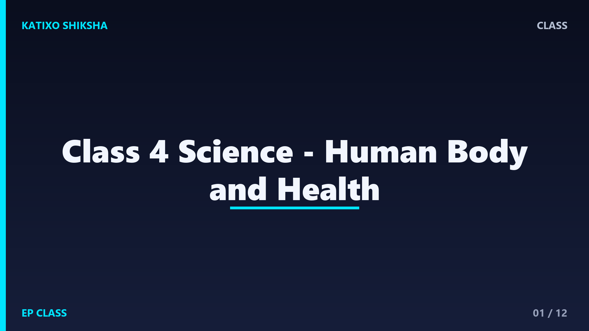
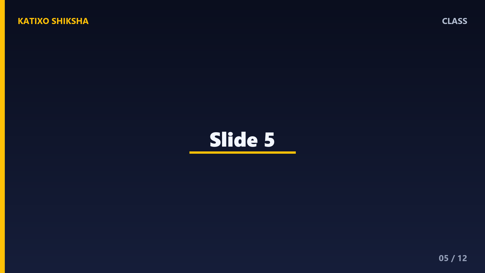

Class 4 Science - Human Body and Health

Slide 1Our body is made of many parts that work together. The brain thinks, the heart pumps blood, lungs help us breathe, stomach helps digest food, and bones support the body. When every part works well, we feel healthy and active.

Slide 2The brain is the control center of the body. It helps us think, remember, learn, balance, and make decisions. It also receives messages from our sense organs, like eyes and ears, and helps us respond.

Slide 3The heart is a strong muscle inside the chest. It pumps blood around the body. Blood carries oxygen and nutrients to different parts. Exercise, healthy food, and good sleep help the heart stay strong.

Slide 4Lungs help us breathe. When we breathe in, air goes into our lungs. Oxygen from air helps our body get energy. When we breathe out, the body removes carbon dioxide. Clean air is important for healthy lungs.

Slide 5Food gives us energy, growth, and protection. The mouth chews food. The stomach and intestines help break food into useful parts. Digestion means changing food into a form the body can use.
Slide 6Bones give shape and support to our body. They also protect organs, like the skull protects the brain. Muscles help us move. When bones and muscles work together, we can walk, run, jump, and write.
Slide 7Our sense organs help us understand the world. Eyes help us see. Ears help us hear. Nose helps us smell. Tongue helps us taste. Skin helps us feel heat, cold, touch, and pain.

Slide 8Teeth help us bite and chew food. Different teeth have different shapes and jobs. We should brush twice a day, rinse after meals, and avoid too many sweets. Healthy teeth help healthy digestion.

Slide 9A balanced diet includes different food groups. Cereals give energy. Pulses, eggs, milk, and nuts help growth. Fruits and vegetables protect us from illness. Water keeps the body working properly.
Slide 10Germs are tiny living things that can make us sick. Washing hands with soap, bathing, wearing clean clothes, covering food, and drinking clean water help protect us. Clean habits are simple but powerful.

Slide 11Exercise keeps muscles and heart strong. Rest helps the body recover. Sleep helps the brain and body grow. We should also follow safety rules at home, school, and on the road to avoid injuries.

Slide 12Let us revise. Which organ pumps blood? What do lungs do? Why do we need bones? Name two healthy habits. Why should we brush our teeth? These answers show good body and health understanding.